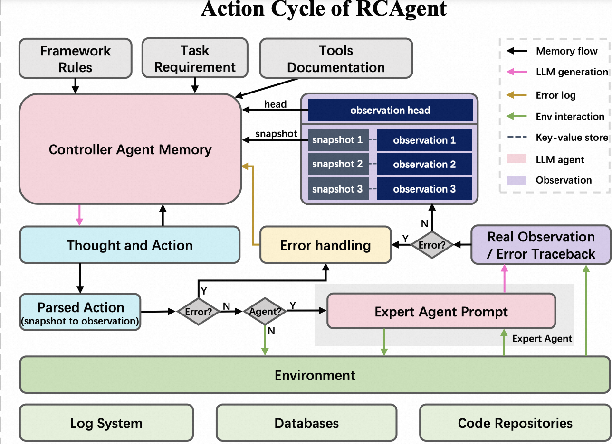
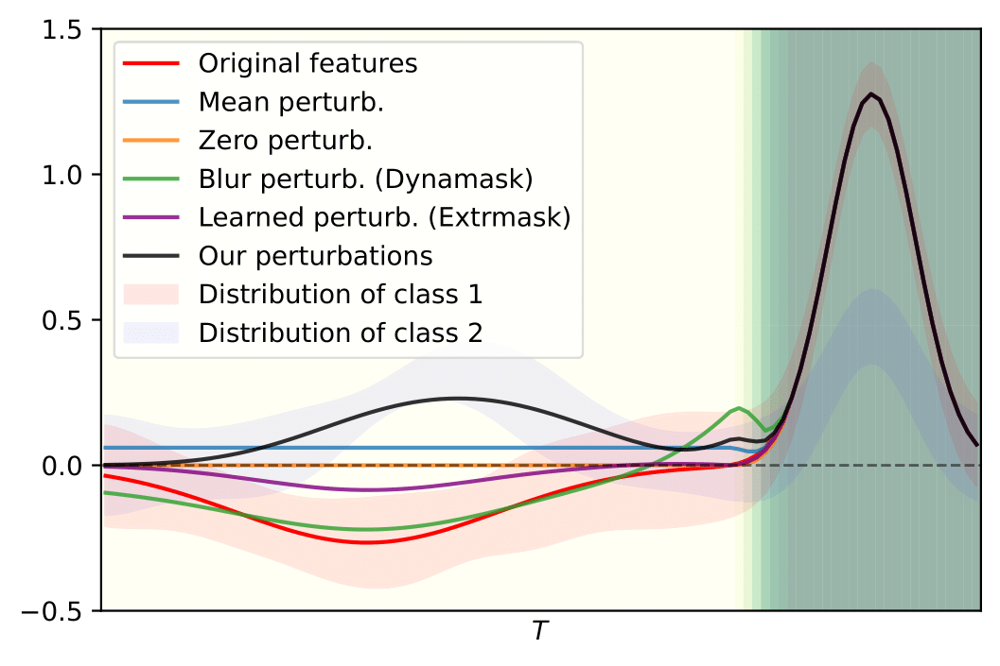
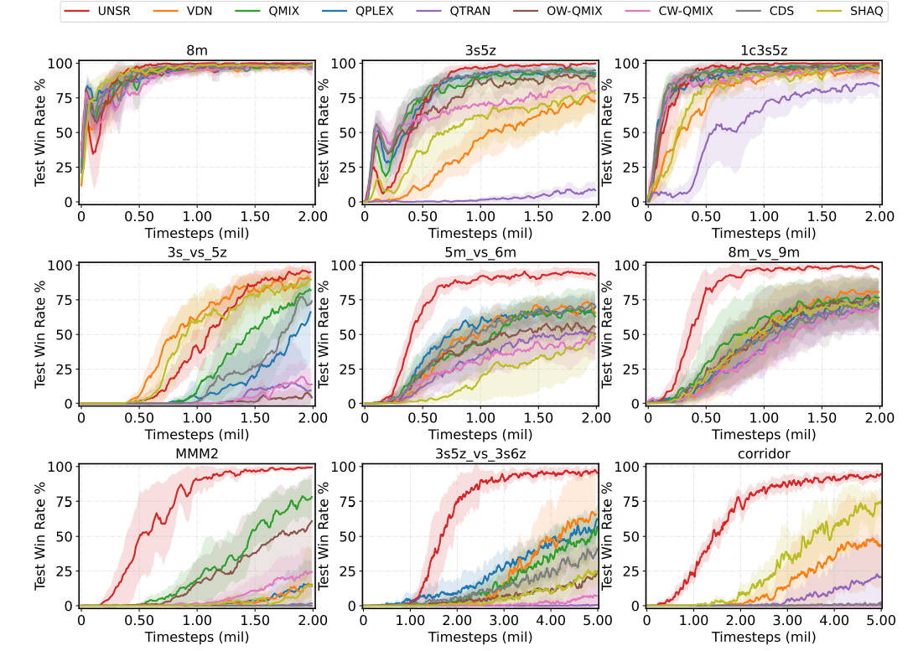
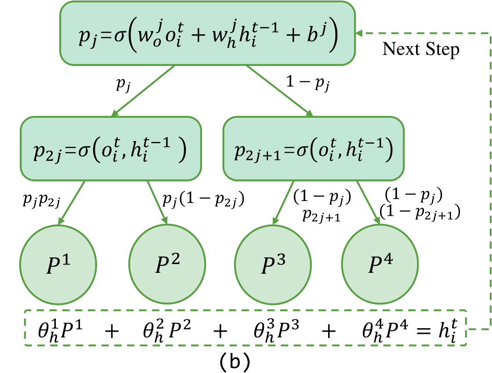
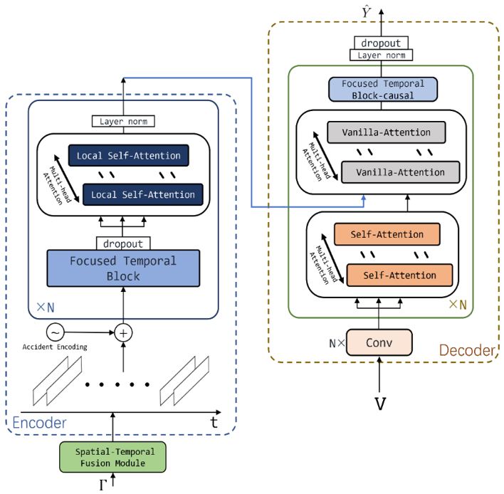

|
Zichuan Liu | 刘子川 I am a master student at Nanjing University, supervised by Prof. Chunlin Chen. I am currently working as a research intern at DAMO Academy of Alibaba Group, where I am advised by Dr. Qingsong Wen and I am privileged to work closely with Dr. Tianchun Wang, A/Prof. Dongsheng Luo, and A/Prof. Mengnan Du. Previously, I completed my B.S. in Computer Science at Wuhan University of Technology, where I worked with A/Prof. Rui Zhang. My research interests focus on Time Series, Reinforcement Learning, and eXplainable Artificial Intelligence, especially with applications in multiple sequences, offline models, and dynamic environments, allowing them to explicitly adapt to the non-stationary task distributions in real-world. I am always open to collaborate with others! Please feel free to email me if you have any questions, or if you are interested in a research collaboration. Note!!! I am looking for opportunities for a PhD program in AU/CA, and research internships (anywhere), plz contact me if u have a suitable position! Email / CV / Google Scholar / Github / Twitter |
{kind=link}
ResearchRepresentative papers are highlighted, * denotes contribution equally. |
|

|
RCAgent: Cloud Root Cause Analysis by Autonomous Agents with Tool-Augmented Large Language Models
Zefan Wang, Zichuan Liu, Yingying Zhang, Aoxiao Zhong, Lunting Fan, Lingfei Wu, Qingsong Wen cmt, 2023 (Under Review) paper / code / bibtex we introduce RCAgent, a tool-augmented LLM autonomous agent tailored for cloud root cause analysis. |
|

|
Explaining Time Series via Contrastive and Locally Sparse Perturbations
Zichuan Liu, Yingying Zhang, Tianchun Wang, Zefan Wang, Dongsheng Luo, Mengnan Du, Min Wu, Yi Wang, Chunlin Chen, Lunting Fan, Qingsong Wen openreview, 2023 (Under Review) paper / code / bibtex A novel perturbation-based method for time series explanation. |

|
NA2Q: Neural Attention Additive Model for Interpretable Multi-Agent Q-Learing
Zichuan Liu, Yuanyang Zhu, Chunlin Chen International Conference on Machine Learning (ICML), Honolulu, USA, 2023 (CCF-A, CORE A*) project page / paper / code / bibtex We present a novel method providing inherent intelligibility of collaboration behavior on multi-agent reinforcement learning. |
|

|
Boosting Value Decomposition via Unit-Wise Attentive State Representation for Cooperative Multi-Agent Reinforcement Learning
Qingpeng Zhao*, Yuanyang Zhu*, Zichuan Liu*, Zhi Wang, Chunlin Chen arXiv:2305.07182, 2023 (Under Review) paper / code / bibtex A transformer framework to significantly improve the performance of multi-agent collaboration. |
|

|
MIXRTs: Toward Interpretable Multi-Agent Reinforcement Learning via Mixing Recurrent Soft Decision Trees
Zichuan Liu, Yuanyang Zhu, Zhi Wang, Yang Gao, Chunlin Chen arXiv:2209.07225, 2022 (Under Review) paper / code / bibtex We propose a novel interpretable architecture that can represent explicit decision processes via the root-to-leaf path of recurrent soft decision trees. |
|

|
Spatial-temporal Conv-sequence Learning with Accident Encoding for Traffic Flow Prediction
Zichuan Liu, Rui Zhang, Chen Wang, Zhu Xiao, Hongbo Jiang IEEE Transactions on Network Science and Engineering (TNSE), 2022 (SCI, JCR-Q1, IF=5.213) paper / code / bibtex STCL improves traffic prediction by capturing short-term temporal dependencies and accident impact through convolution and sequence learning. |

|
Multi View Spatial-Temporal Model for Travel Time Estimation
Zichuan Liu, Zhaoyang Wu, Meng Wang, Rui Zhang International Conference on Advances in Geographic Information Systems (SIGSPATIAL), 2021 (CCF-C, CORE A) paper / code / bibtex This solution achieved high performance on large-scale taxi trajectory data and won a runner-up award at SIGSPATIAL'2021 GISCUP. |
|
|
|
Website template from Jon Barron. Last updated: September 29, 2023. |